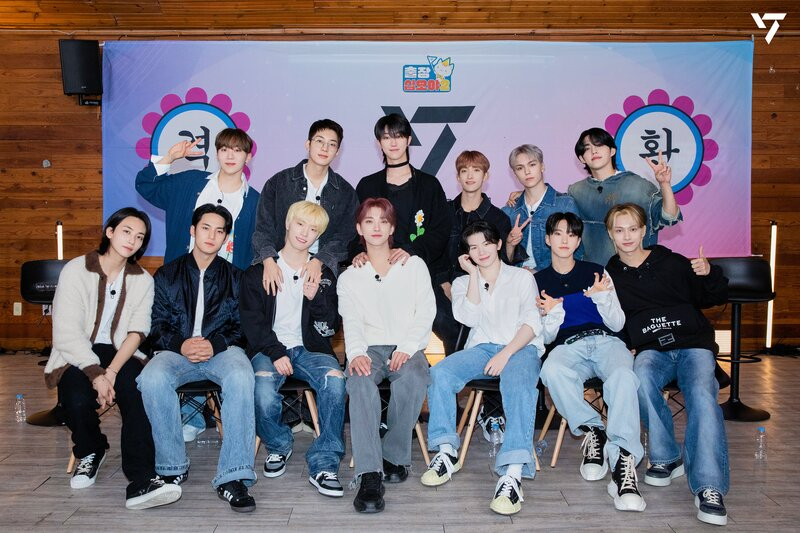

SEVENTEEN (세븐틴) - мужская группа компании Pledis Entertainment. Они дебютировали 26 мая 2015 года с альбомом 17 Carat.
Группа состоит из трех под-групп: хип-хопа, вокала и выступлений. Они известны, как группа, которая участвует в своем же промоушене, продюсировании и создании хореографии.
10 сентября вышел второй мини-альбом Boys Be, который позднее стал самым продаваемым из альбомов новичков в 2015. Успех альбома заработал им награды на Golden Disk Awards, Seoul Music Awards и Gaon Chart K-Pop Awards. SEVENTEEN также стали единственной к-поп группой в списке Billboard "21 Under 21 2015: Music's Hottest Young Stars".
